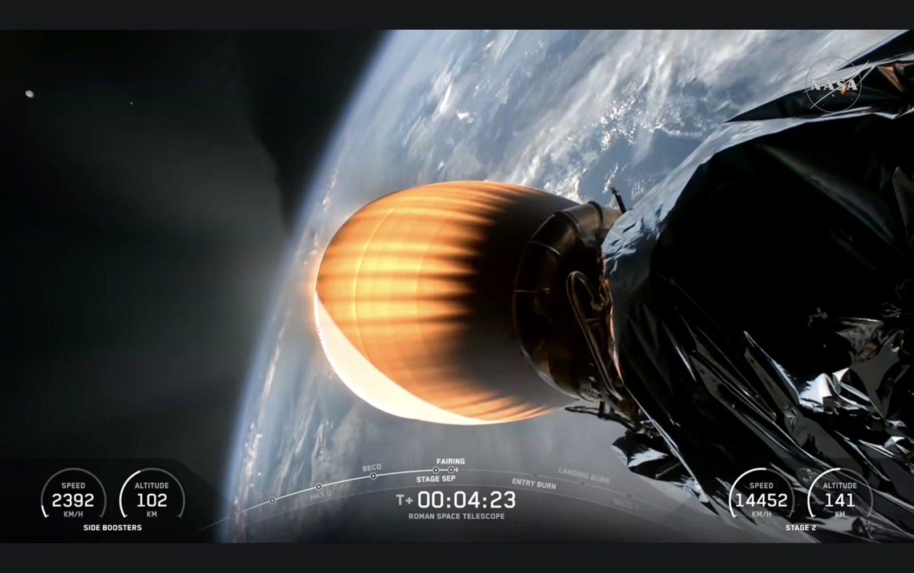
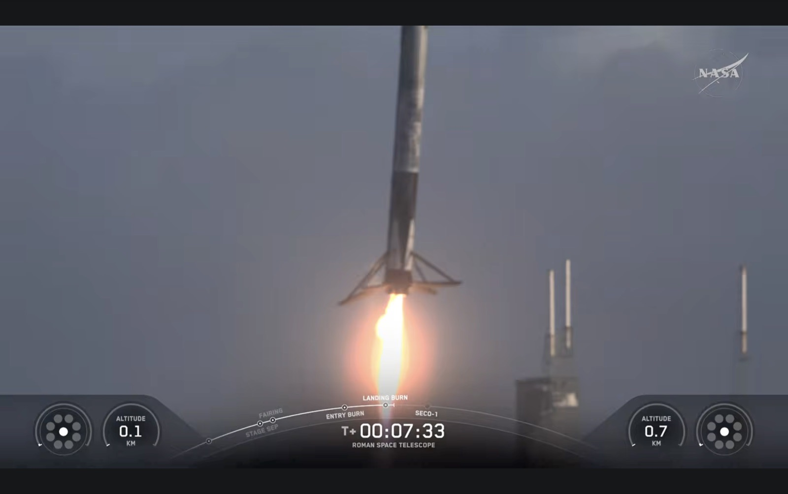
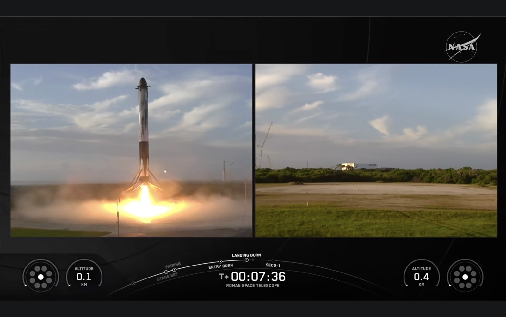
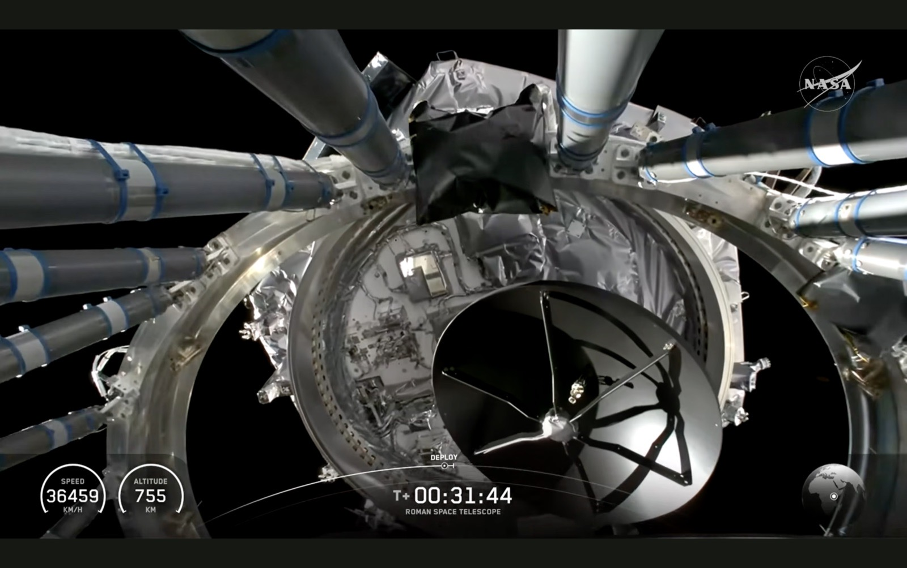

Roman is going to revolutionize the way we look at our universe.— Dr. Nicky Fox, Associate Administrator, NASA Science Mission Directorate, on the launch broadcast
I watched the launch of the Nancy Grace Roman Space Telescope, and I was brought to tears by the teamwork and the decades of effort on display — all of it in service to science, discovery, wonder, and awe. I needed to witness something hopeful and wonder-filled, something to make me feel good about humanity. I am excited for what discoveries will come.
It’s so cool to see what we can accomplish together.— Megan Cruz, NASA Communications, on the launch broadcast
I grew up on Star Trek: The Next Generation. I loved seeing a team of competent, compassionate, and diverse professionals build things and solve problems together. Now, after three decades working in big tech, I have the terms competency network, omni-directional learning and experiential learning to describe what appealed to me in the Star Trek universe.
Watching the launch, and the intricate collaboration between multiple teams in multiple locations, I got those Star Trek teamwork feels. The result was a telescope loaded with scientific instruments clearing the atmosphere and beginning a million-mile journey. Also, the side boosters landed intact back on Earth under their own power. So cool.
It’s such a good day!— Dr. Nicky Fox, on the launch broadcast
Here is the whole thing, if you want to watch it too. Everything quoted in this piece is in here somewhere.
Nothing is requested from YouTube until you press play. Direct link: youtube.com/watch?v=9wq3VHsL_bE
What actually went up
Liftoff was 7:26 a.m. EDT on Sunday, 30 August 2026, from Launch Complex 39A at Kennedy Space Center — the pad that sent Apollo 11 to the Moon — on a SpaceX Falcon Heavy: three cores, twenty-seven Merlin engines, over five million pounds of thrust.
The two side boosters shut down about two minutes and twenty-four seconds in, separated, flipped, burned back, and landed at Cape Canaveral. One of them was on its first flight; the other was on its third. The centre core was expended — it was not recovered, and it was never going to be. That is the part of the “the boosters landed” story that gets left out, and it is worth keeping in: the mass Roman needed cost one booster, and somebody decided that trade deliberately.

That orange is not a warning light. The second stage’s Merlin Vacuum engine has a thin niobium-alloy nozzle extension, and in vacuum there is no air to carry heat away — so the nozzle sheds it the only way left, by radiating, which at that temperature means glowing. The light in that photograph is the cooling system. It is the part of the engine that looks most like it is failing, and it is the part doing its job most visibly, which is a thing worth remembering for later in this piece.


Two small things in those frames are worth reading rather than glancing at. The engine diagrams at the bottom corners show one lit ring out of nine: the landing burn is a single centre engine, throttled, because nine would stop the booster well above the pad and then push it back up. And the clock says seven and a half minutes. At that moment Roman was still under power and still accelerating, hundreds of kilometres downrange — so two-thirds of the rocket was already home and cooling on concrete while the payload was still climbing. Both halves of that were happening at once, which is not how rockets worked for the first sixty years of this.
The observatory separated from the second stage 31 minutes after liftoff. It is now on a roughly hundred-day cruise to its working orbit. The mission cost about $4.3 billion, its primary science mission is five years, and it carries enough propellant for at least ten.

We are not going to tell you which piece of hardware is which in that picture, because we do not reliably know, and a confident caption naming the wrong strut is worse than an honest one naming none. What the frame unambiguously shows is the moment of letting go — the second stage looking back at a bay that no longer has a telescope in it. Roman is out of shot. It is the only photograph here in which the subject of the essay is absent, and that is exactly what the announcer meant.
Roman surveys the sky more than a thousand times faster than Hubble. Julie McEnery, Roman’s senior project scientist, put it in wall-clock terms: a survey that would take Roman a month would take Hubble a century.
Roman’s mirror is the same size as Hubble’s — 2.4 metres. What changed is not the sharpness. It is how much sky is in the frame at once: a field of view at least a hundred times larger. This is not a better telescope than Hubble. It is a telescope that answers a different kind of question, and the kind is how much variety is out there, which is a question you cannot ask one object at a time.
And the mirror has a history. It was a gift from the National Reconnaissance Office — a Hubble-class optic the intelligence community no longer needed, sitting in storage, handed over to NASA for science. The telescope named for a woman who was told not to do this is built around a mirror somebody else was finished with.
The mission: two things we cannot name, and a hundred thousand we can
It is going to measure dark matter, which is, I know that sounds bizarre, but it’s like the fabric of the universe. It’s the thing you can’t see. But we know it’s there.— Dr. Nicky Fox, on the launch broadcast
Dark matter
Dark matter is a discrepancy, not a substance we have met. It is the name for the fact that galaxies and clusters move as though there is far more mass in them than the light accounts for. Fritz Zwicky found it first, in the 1930s, in the Coma cluster; Vera Rubin and her collaborators nailed it down in the 1970s with the rotation curves of spiral galaxies, which stay flat out to their edges when they should fall away. There is more than five times as much of it as there is ordinary matter — the matter that makes stars, planets, and you.
What it is made of remains open. NASA’s own phrasing is admirably blunt: physicists “don’t even have a very good idea what the mass of dark matter particles might be.” Nearly a century after Zwicky, the search space is still open at both ends.
Roman’s method is weak gravitational lensing. Mass bends light, so a clump of dark matter sitting between us and a distant galaxy distorts that galaxy’s apparent shape by a tiny amount. One galaxy tells you nothing — the distortion is far smaller than the galaxy’s own random shape. But measure hundreds of millions of galaxies and the statistics resolve into a map of where the invisible mass is, and when it got there. If dark matter is heavy, it clumped early; if it is light, it settled slowly. Roman is built to tell those apart.
We have written about this discrepancy before. Beyond the Optical Image (No. 60) sets Zwicky’s 1933 Coma measurement and Rubin, Ford & Thonnard’s 1980 rotation curves beside Helen Edgar’s constellation of the same name — the Dark Matter Field, the accumulated weight of neuronormativity, invisible and measurable only by what it bends.
Dark energy
In 1998, two independent teams — the work for which Saul Perlmutter, Brian Schmidt and Adam Riess shared the 2011 Nobel Prize in Physics — found that distant Type Ia supernovae were dimmer than they should be. Dimmer means farther. Farther than expected means the expansion of the universe is not slowing down under its own gravity. It is speeding up.
Roughly 68 to 70 per cent of the universe’s total content is whatever is doing that. And here is NASA’s own sentence about it, which we would like to frame:
“Right now, dark energy is just the name that astronomers gave to the mysterious ‘something’ that is causing the universe to expand at an accelerated rate.”
That is not a hedge. That is the actual state of the field, said plainly by the agency that just spent $4.3 billion to go and look. Dark energy is a placeholder wearing a noun’s clothes. One leading candidate is the cosmological constant — a term Einstein put into general relativity for other reasons entirely, and later withdrew.
You will read everywhere — including on NASA’s own dark energy page — that Einstein called the cosmological constant his “biggest blunder.” Nobody has ever found him saying it. Essentially every version traces to one source: George Gamow, writing in 1956, the year after Einstein died, reporting a remark made to him privately years earlier. Mario Livio’s investigation concluded Einstein probably never used the phrase; other scholars have since argued Gamow may be unfairly accused. It is genuinely unsettled.
We are not correcting NASA. We are marking the line as a quotation with one witness and no document, which is the category Too Good to Check exists for. A sentence too good to lose is exactly the sentence that stops getting checked.
Roman attacks dark energy from three directions at once, which is the point of building a survey machine rather than a pointing machine: it will find and measure Type Ia supernovae as standard candles out to greater distances, map the three-dimensional distribution of galaxies across cosmic time, and use the same weak lensing data that serves the dark matter question. If those three disagree, that disagreement is itself the finding.
Exoplanets
An exoplanet is a planet orbiting a star that is not the Sun. The first confirmed detections around a main-sequence star arrived in the 1990s; there are now several thousand confirmed. Roman is expected to find on the order of 100,000 more by transit alone — watching for the small, regular dip as a planet crosses in front of its star — while monitoring some 200 million stars toward the crowded centre of our galaxy in the Galactic Bulge Time Domain Survey.
The transit method has a bias built into it: it favours big planets on short, tight orbits, because those block more light more often. Roman’s other method, microlensing, has the opposite bias, and that is why it matters. When one star passes precisely in front of another, its gravity briefly focuses the background star’s light; a planet orbiting the foreground star adds its own brief spike. This works best for worlds from the habitable zone outward — the cold, wide orbits transit surveys mostly miss — including ice giants and rogue planets bound to no star at all. NASA expects more than a thousand planets in that habitable-zone-and-beyond range.
And Roman carries a Coronagraph Instrument as a technology demonstration: a device for blocking a star’s light so the far fainter planet beside it becomes visible. The target is objects around 100 million times fainter than their host star — up to a thousand times better than anything currently flying. It is explicitly a demonstration, not a survey instrument. It is there to prove the technique that a future mission will use to look for life.
This is the whole architecture of the exoplanet programme and it is worth saying out loud, because it is a design principle and not only an astronomy fact. Neither method is better. Each is unable to see what the other sees. The census is only a census because both are running — and a census built on one method would have returned a confident, precise, wrong picture of what planetary systems are like.
We have made this argument in another register. The Universe Runs on Difference (No. 8) is about what a monoculture costs; the correction is not a better single measure but more than one kind of measure.
A cosmic struggle
And they have sort of a cosmic struggle between dark matter that wants to pull things together and dark energy that wants to push things apart, and that will allow us to finally kind of explain our universe and understand our place in it.— Dr. Nicky Fox, on the launch broadcast
The picture underneath that is real, and it is roughly this. Gravity from all the matter in the universe — overwhelmingly dark matter — pulls structure together: gas into galaxies, galaxies into clusters, clusters into the filaments and voids of the cosmic web. Whatever dark energy is pushes the other way, and its effect grows as space expands, because there is more space for it to act in. In the early universe, gravity was winning; structure formed. Later, the push won; expansion began to accelerate. The ratio of those two effects, tracked over billions of years, is what Roman is built to measure.
But we should be careful with struggle, and with wants. Dark matter does not want anything; nor does dark energy, which may not be a thing at all so much as a property of empty space, or a sign that our theory of gravity is incomplete at the largest scales. The struggle is a picture, not a mechanism. It is a very good picture and Dr. Fox was speaking live on a broadcast, not writing a paper. We are not correcting her. We are declining to build anything on top of the metaphor.
That caution has a specific address in this house. We do not take a fact about the universe and derive a duty from it — the sky is not an argument about how anyone should live. And we are wary of a named thing feeling like an understood thing. The Light Arrived Before the Name (No. 62) makes the general case: every name in astronomy is an arrival record, not an origin record. Something was there long before we had a word for it, and the word is about us.
Dark energy is what we called the thing so we could keep talking about it. Naming it bought us a sentence. It did not buy us the answer.
Which is, if you have ever been handed a diagnosis, a familiar shape. A name can be the most useful thing you have ever been given and still not be an explanation of you. Both of those are true at once, and the second one is not a reason to give the name back.
The ecology of the known universe
Imagine you’re taking pictures of a forest. You want to get pictures of not just the forest and the trees, but the birds on the branches of those trees. We have special telescopes like Hubble and James Webb that zoom in and take pictures of those birds. And we have other telescopes that do the panorama, that get the whole forest. Roman is a superpower, because it can do both. It can get the whole forest and then zoom in at the exact same time and count the birds on the branches of those trees. And when you think about it, once you’re doing that, you’re doing ecology. Except these aren’t birds and trees and forests. We’re counting up supernovae and galaxies, so we can study effectively the ecology of the known universe.— Dr. Shawn Domagal-Goldman, Director, NASA Astrophysics Division, on the launch broadcast
That is the best short description of what changes with Roman that anyone gave on the day, and it is worth taking seriously rather than only enjoying.
Ecology is the study of relations, and relations do not fit in a frame. You cannot do ecology on one specimen. A single exquisite photograph of a single bird, however sharp, tells you nothing about how many there are, where they are not, what they are near, what happens to their numbers in a bad year, or which ones are strange. To get any of that you need the whole stand of trees at once, repeatedly, for years — which is precisely the survey Roman is: enormous field of view, revisited on a cadence, for half a decade at minimum.
And that is why this is the instrument that can see variation. A pointed telescope finds objects. A survey telescope finds distributions — the shape of the whole population, the width of it, the outliers, the things at the edges nobody would have thought to point at. You cannot photograph a range. You have to count.
The tail of a distribution only exists if you sampled widely enough to reach it. Everything we have ever learned about how much variety is normal, we learned from a big enough sample.
Which is a sentence we could have lifted from any of a dozen pieces here. No One Is the Leader (No. 22) is about a murmuration: no bird is the flock, and the shape only exists across thousands of them at once. More Than Human is a whole collection built on the observation that the range of ways to have a nervous system is far wider than the one we generalised from. My Monotropic Galaxy is Helen Edgar mapping her own attention as a sky.
Roman will observe roughly 20 billion stars in the Milky Way and two billion galaxies, and NASA has said it may measure light from a billion galaxies over its lifetime. Those numbers are not there to be impressive. They are there because that is the sample size at which the question “what is the range?” becomes answerable at all.
- “Roman is a superpower.” For an instrument, that is fine, and it is a lovely line about a telescope that does two jobs at once. We do not accept it about people. The superpower framing is one of the traps this site names on nearly every piece: it trades a demand for accommodation for a compliment, it is withdrawn the moment you need support, and it quietly makes your worth conditional on output. A telescope can be a superpower. You are not obliged to be one. See Foundations.
Lagrange Two
There we go. Nancy Grace Roman Space Telescope flying free on its way to Lagrange Two. And to open a new eye on the universe.— NASA launch commentator, on the launch broadcast
Lagrange point 2 is about 1.5 million kilometres from Earth — roughly a million miles, about four times the distance to the Moon — on the line from the Sun through the Earth and out the far side.
Here is the part that is genuinely strange, and worth slowing down for. An object orbiting the Sun farther out than Earth should take longer than a year to go round; that is Kepler. But at L2 the Earth’s gravity is pulling in the same direction as the Sun’s, adding to it, and the sum works out such that a spacecraft there completes its orbit in exactly one year — it keeps station with us. In the frame that rotates with the Earth, the gravitational pulls and the centrifugal term cancel and the point sits still. Roman will hold its distance from Earth for its entire mission without leading or lagging.
That geometry is why observatories go there. The Sun, the Earth and the Moon all stay in the same part of the sky — behind the spacecraft — so a single sunshade blocks all three at once, the instruments look out into the dark with nothing bright swinging past, and there are no repeated heating and cooling cycles from passing in and out of Earth’s shadow. It is thermally quiet. The James Webb Space Telescope and ESA’s Euclid are already there, in orbits of their own around the same point. Roman joins the neighbourhood.
Nothing parks at L2. Roman will fly a wide halo orbit, a large loop around the point rather than a spot on it. That loop is not a detail — it is what keeps the spacecraft out of the Earth’s shadow, so its solar array stays in sunlight and its communications stay clear of the Earth’s glare.
And L2 is not stable. It is one of the three unstable Lagrange points: an equilibrium like a ball balanced on a saddle, where any small nudge grows instead of dying away. The instability timescale is on the order of three weeks. Left alone, Roman would drift off and not come back. So it will fire its thrusters on a schedule, forever, to stay.
We think that last fact is the best thing about L2, and it is almost always the part left out.
The most famously balanced place in the sky is not a place that holds you. It is a place that will hold you for about three weeks and then let go, and everything that stays there stays by being actively, repeatedly, unglamorously supported.
The station-keeping is not a defect in the orbit. It is the orbit. Nobody at NASA files those burns under failure to be independent. They are a line item, budgeted in propellant from the beginning, and the mission is designed around them — there is fuel aboard for at least ten years of them. The observatory is not less of an observatory for needing them.
We will say what that rhymes with and then stop, because it is a rhyme and not a proof: a support that has to be renewed is not a support that failed. Ongoing accommodation is not evidence that someone is not managing. It is the shape of the arrangement that lets the work happen at all — and the alternative is not independence, it is drift.
The woman it is named for
Nancy Grace Roman (born Nashville, Tennessee, 16 May 1925; died 2018) was NASA’s first Chief of Astronomy and one of the agency’s first women executives. Her father was a geophysicist, her mother a music teacher, and she knew by around seventh grade what she wanted to do.
She was told not to. The account she gave repeatedly in later life is that the head of the physics department at Swarthmore said he usually tried to dissuade women from majoring in physics — and then allowed that she might make it. She took the degree in astronomy in 1946, took her doctorate at the University of Chicago, and worked on stellar motions and stellar classification before NASA existed.
She joined it in 1959, a year after it was founded, as its first chief of astronomy. In the mid-1960s she convened the committee of astronomers and engineers that worked out what a large space telescope would actually need to be, and then did the far less glamorous part: she argued it through NASA and through Congress, for years, against people who did not want to pay for it. That is why she is called the “Mother of Hubble.” The mission now carrying her name was called WFIRST until 2020.
The renaming is not decoration. The instrument that just launched does at survey scale what she spent her career arguing was worth doing at all.
The teamwork on the broadcast was the visible end of something much longer and less pleasant. Roman, under its old name and its new one, was proposed for cancellation or deep cuts in four separate presidential budget requests — three in a row for fiscal years 2019 through 2021, and again for fiscal year 2026, that last one after an Office of Management and Budget passback targeted a spacecraft that was already nearly built. Congress funded it every time, on a bipartisan basis, and the FY2026 appropriation described the mission as ahead of schedule and under budget. It launched roughly nine months early.
We are including this because decades of effort is otherwise an abstraction. Some of that effort was engineering. Some of it was people writing letters and giving testimony to keep a nearly-finished telescope from being thrown away. Both are the reason there was something to watch on Sunday morning.
About Glimmers
Glimmers is a new collection here, and this is its first entry. It is for hopeful science news — news that stokes our senses of wonder, awe, interdependence and belonging, told with a Star Stuff angle.
It works differently from everything else on this site, and the difference is the reason it exists. A zine here takes one settled fact and follows it until the claim about belonging is already inside it. That takes time, and it is the right speed for settled things. A launch is not settled. It is a Sunday morning, and a thing that either worked or did not, and a feeling that arrives while you are still watching. Glimmers is the shelf for that: written close to the event, marked with its date, and held to exactly the same sourcing standard as the slow work.
The word is Deb Dana’s, coined in 2018 as the counterpart to a trigger — a small moment in which a nervous system registers that things are all right. It arrived inside polyvagal theory, which is influential and scientifically contested, and we say so every time. Helen Edgar puts it in the form we actually use: a glimmer need not have anything to do with polyvagal theory at all, being simply the opposite of a trigger — a moment of joy or comfort, sensory or cognitive. That reading, and the argument for why a good word does not stop being good when the theory it arrived in is in trouble, is One Word for the Opposite (No. 80).
There is a fuller account of that history, including a wrong turn we made with the same word two days before this collection was named, on the collection page. It is worth reading before you assume we picked the name casually.
- Not a press release. Being glad about something is not a reason to stop checking it. Every number here was taken from NASA or from the launch reporting and is graded below; the parts that are contested are marked as contested, including on a page belonging to the agency we are cheering for.
- Not “the universe loves you for it.” Nothing in the sky owes anyone anything, and nothing here derives a value from a fact. We say love you down to your star stuff: the implied subject is we, and down to measures how far the loving reaches, not why it is given. Down to is not because of — the argument is A Promise, Not a Finding.
- Not a superpower claim. See above. The word was used about the telescope on the broadcast and it stays there.
- Not an argument that hope requires a rocket. This one happened to be a rocket. A glimmer is not ranked by budget, and the collection is not going to become a NASA fan page.
- Not a proof of anything about us. The station-keeping at L2 rhymes with something true about support; a rhyme is not evidence. The orbital mechanics is settled. The reading is ours, and it is offered as a reading.
- Not neutral about the near-cancellations, and not partisan either. What is stated above is the appropriations record. What we think about it is a separate sentence, and this is it: a finished telescope is a bad thing to throw away.
What happens next
Roughly a hundred days of cruise, then insertion into the halo orbit, then commissioning — cooling down, focusing, calibrating — before the surveys begin in earnest. The first data will not settle anything about dark energy. The point of a five-year survey is that it takes five years.
Meanwhile it is out there, past the Moon’s orbit and still climbing, falling exactly as fast as we are around the Sun.
Flying free, on its way to Lagrange Two.
More Glimmers →Sources & notes. Every figure below was checked against a primary or agency source before publication; the grading is honest about which is which.
The launch. Liftoff 7:26 a.m. EDT, 30 August 2026, LC-39A, Kennedy Space Center; Falcon Heavy; 27 Merlin engines and over five million pounds of thrust; side booster shutdown at about T+2:24 with boost-back and landing at Cape Canaveral, centre core expended; spacecraft separation at T+31 minutes — NASA’s Roman launch blog and SpaceNews. VERIFIED.
Mission parameters. ~100-day cruise to L2 at 1.5 million km; $4.3 billion; five-year primary mission with propellant for at least ten; ~100,000 transiting exoplanets; ~20 billion Milky Way stars and ~2 billion galaxies; coronagraph target of 100 million times fainter than the host star — SpaceNews. VERIFIED.
Observatory. Field of view “at least 100 times larger than Hubble’s”; “potentially measuring light from a billion galaxies in its lifetime”; blocking starlight to see exoplanets and planet-forming disks; a statistical census of planetary systems — NASA, Roman Space Telescope, quoted verbatim. VERIFIED. The 2.4-metre mirror and its origin as a National Reconnaissance Office asset are widely reported and confirmed by NASA’s own mission history; the wavelength range is approximately 0.5–2.3 microns. VERIFIED.
Survey speed. “We can survey the sky more than 1,000 times faster than Hubble” and “a survey that would take Roman a month would take a century for Hubble” — Julie McEnery, Roman senior project scientist, quoted in SpaceNews. VERIFIED as reported speech.
Dark matter. Zwicky in the 1930s and Rubin in the 1970s; more than five times as much dark matter as normal matter; “don’t even have a very good idea what the mass of dark matter particles might be”; weak gravitational lensing across hundreds of millions of galaxies; heavy particles clustering early versus light particles settling slowly — NASA, Dark Matter. VERIFIED. The primaries behind those two names — Zwicky on the Coma cluster (1933) and Rubin, Ford & Thonnard, ApJ 238, 471 (1980) — are cited on No. 60.
Dark energy. 1998 discovery of accelerating expansion by two teams led by Perlmutter, Schmidt and Riess from Type Ia supernovae; 2011 Nobel Prize in Physics; roughly 68–70% of the universe; the cosmological constant in general relativity; and the sentence quoted in full above — NASA, What is Dark Energy?. VERIFIED.
“Biggest blunder.” CONTESTED, and marked as such on the page. The phrase traces to George Gamow (1956), reporting a private remark by Einstein, who had died the previous year; Mario Livio’s investigation concluded Einstein probably never said it, while later work has argued Gamow may be unfairly accused. No document in Einstein’s hand has been produced. We state the dispute rather than either repeating or dismissing the line.
Exoplanets. Microlensing monitoring of 200 million stars toward the galactic centre; the Galactic Bulge Time Domain Survey; ~100,000 transiting planets; more than a thousand planets in the habitable zone and farther out; microlensing’s advantage for cold, wide orbits and rogue planets; the coronagraph at up to a thousand times better than other observatories — NASA, Exoplanets. VERIFIED.
L2. 1.5 million km; the one-year period; the Sun, Earth and Moon staying behind the spacecraft; thermal stability; JWST and Euclid already in residence; a quasi-halo orbit rather than a fixed point; instability on a timescale of roughly three weeks requiring regular thruster corrections — NASA mission material and launch reporting. VERIFIED. Open: the instability timescale is quoted at the level of the standard summary rather than from a named orbital-dynamics paper.
Nancy Grace Roman. 1925–2018; born Nashville 16 May 1925; Swarthmore 1946 and a Chicago doctorate; NASA’s first chief of astronomy from 1959 and one of its first women executives; the mid-1960s committee; “Mother of Hubble”; WFIRST renamed in 2020 — NASA biographical material, Britannica and the University of Chicago’s obituary. VERIFIED. PLAUSIBLE: the Swarthmore physics-department remark is reported consistently across sources and derives from Roman’s own retellings in interviews; it is paraphrased here rather than quoted, because we have not traced it to a single interview transcript.
Budget history. Cancellation proposed in the FY2019, FY2020 and FY2021 budget requests under the mission’s former name WFIRST, and a deep cut proposed for FY2026 following an OMB passback; Congress funded the mission each time; the FY2026 appropriation described Roman as ahead of schedule and under budget; launch roughly nine months ahead of the commitment date — SpaceNews and contemporaneous launch reporting. VERIFIED as reported.
The broadcast quotations. Dr. Nicky Fox, Dr. Shawn Domagal-Goldman, Megan Cruz and the NASA launch commentator were transcribed by Ryan Boren while watching NASA’s live launch broadcast, linked at the timestamp. Titles were checked independently: Fox is Associate Administrator for NASA’s Science Mission Directorate; Domagal-Goldman is Director of the Astrophysics Division. PLAUSIBLE rather than VERIFIED: the wording is a personal transcription from live speech and has not been checked against an official transcript. Light punctuation has been added and verbal repetitions trimmed where marked by ellipsis in the original notes; no words have been changed.
Glimmer. Deb Dana, The Polyvagal Theory in Therapy (Norton, 2018), cited from the publication record for the coinage; the book is unread here and nothing is quoted from it. Polyvagal theory is influential and scientifically contested, and that is stated wherever the word is used. Helen Edgar, Glimmers: Autistic Joy and Monotropism (Autistic Realms), is the reading this collection works from. Full account: No. 80 and the collection page.
The video. Embedded from NASA’s YouTube channel and click to load — nothing is requested from YouTube until a reader presses play, following the pattern set on A Field Guide to Watching Animals, and served from youtube-nocookie.com. The plain URL prints on paper, where a player means nothing. The video id was confirmed by oEmbed rather than trusted: 9wq3VHsL_bE returns “Nancy Grace Roman Space Telescope Launch”, author NASA. VERIFIED. An embed is the one thing on this site no gate can check — a plausible-looking id renders a perfectly healthy player pointing at the wrong film.
The four photographs. Screenshots taken by Ryan Boren from NASA’s live broadcast of the launch, 30 August 2026, at T+00:04:23 (second stage), T+00:07:33 and T+00:07:36 (the side boosters landing) and T+00:31:44 (spacecraft separation) — SpaceX onboard and ground cameras carried on NASA’s stream. NASA content is generally not subject to copyright and is used here for informational purposes under NASA’s media usage guidelines, with NASA credited as the source; the frame carries no third-party copyright notice, which is how NASA marks material it does not own. The onboard imagery is SpaceX’s, and we could not find a clearly published licence covering webcast footage — SpaceX’s terms for its still photography have changed more than once. So the honest statement is that this is used as news and not claimed: credited, not relicensed. The NASA insignia visible in the frame is protected separately and is not in the public domain; it appears here incidentally, as part of a broadcast frame, and nothing on this page should be read as NASA endorsing Star Stuff. The nozzle glow is radiative cooling of a niobium-alloy nozzle extension, which is standard for vacuum-optimised engines. VERIFIED at the level of the engineering literature’s standard account.
What the overlays say, and one comparison we declined. Every figure quoted from the four frames is read directly off the broadcast telemetry, and the T+00:31:44 timestamp independently corroborates the reported spacecraft separation at 31 minutes. The single-engine landing burn and the differing booster altitudes are likewise read off the overlay rather than inferred. We worked out a nice comparison and then cut it: whether 36,459 km/h at 755 km is above or below Earth escape velocity turns on whether the readout is inertial or ground-relative, and the two answers differ by roughly the Earth’s own rotation speed. Since we could not establish which frame SpaceX’s overlay reports, the claim is not made — the speed is simply converted to kilometres per second. Recorded here because a declined claim is worth as much as a kept one. Open: the announcer’s “flying free” call is placed at “about this moment” rather than at a timestamp, having not been located precisely on the broadcast timeline.
Star Trek terms. Competency network, omni-directional learning and experiential learning are used here in their Stimpunks senses; see the Stimpunks glossary. The reading of Star Trek: The Next Generation is the author’s own.
A rhyme, not a proof.